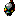
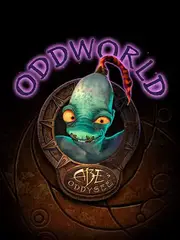

Oddworld Abe's Oddysee |
|
| Tiempo de juego | 23m 6s |
| Última actividad | 16/1/2026 11:59:59 |
| Añadido | 26/4/2025 1:40:24 |
| Modificado | 3/12/2025 11:54:34 |
| Estado de finalización | Jugado |
| Librería | Playnite |
| Fuente | |
| Plataforma | PC (Windows) |
| Fecha de lanzamiento | 18/9/1997 |
| Puntuación de la Comunidad | 83 |
| Puntuación de la Crítica | 100 |
| Puntuación de usuario | |
| Género | Adventure Platform Puzzle |
| Desarrollador | Oddworld Inhabitants |
| Editor | GT Interactive Software Oddworld Inhabitants |
| Característica | Multiplayer Single Player |
| Enlaces | Steam Official GOG Wikipedia Twitch |
| Tag | |
Sos un humilde trabajador en una fábrica de carne gigante, un eslabón más en la cadena de producción, hasta que descubrís la aterradora verdad: vos y los de tu especie son el próximo "producto" en la línea de montaje de los codiciosos dueños. La única salida es escapar de esa pesadilla industrial y embarcarte en un peligroso viaje por un mundo extraño, hostil y lleno de peligros.
No sos un guerrero entrenado; la supervivencia en este viaje depende del sigilo absoluto, la precisión milimétrica al moverte por entornos llenos de trampas y el ingenio para resolver acertijos ambientales que te bloquean el paso. Una habilidad clave es la de comunicarte con otros de tu especie, dándoles órdenes simples. A veces, incluso podés poseer a los guardias enemigos para usarlos a tu favor... o desecharlos.
Es una aventura de plataformas y puzzles cinemática con un diseño visual y sonoro único - lleno de humor negro y una atmósfera opresiva. Cada pantalla es un desafío mortal que requiere observación y reflejos rápidos. Tu misión es arriesgada, pero no se trata solo de tu propia fuga; salvar a tus compañeros es clave y una parte fundamental y gratificante del objetivo principal.
Te espera un escape inolvidable en un mundo bizarro y cruel.